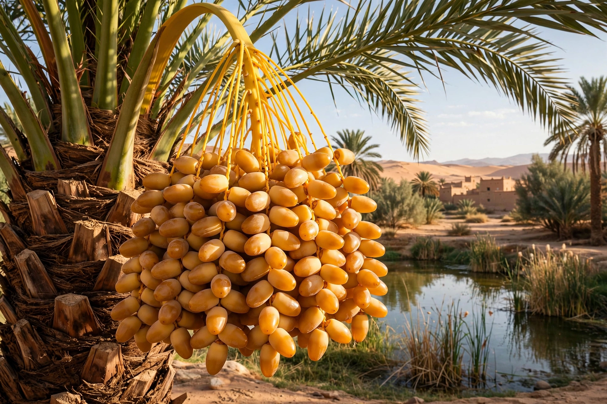

Deglet Nour, also spelled Deglet Noor (Arabic: دقلة النور, 'date-palm of light' / 'translucent or radiant date'), is a cultivar of the date palm (Phoenix dactylifera, family Arecaceae) grown mainly in Algeria (notably the Tolga region near Biskra) and Tunisia. It is prized as the 'queen of dates'.

| Species | Phoenix dactylifera |
|---|---|
| Cultivar | Deglet Nour |
| Origin | Algeria / Tunisia oases |
The fruit is medium to large, elongated, semi-dry, with a light golden-brown, almost translucent flesh when held to light, a soft texture and a delicate, honey-like sweetness. Unlike soft Medjool dates, Deglet Nour has a firmer chew and is often sold still attached to the branch.
Tunisia and Algeria are the world's leading exporters; Deglet Nour accounts for a large share of Tunisia's date exports. It is protected in some markets as a geographical indication product linked to its oasis terroir.
Eaten as a snack, used in North African and Middle Eastern desserts, and traditionally broken fasts during Ramadan.